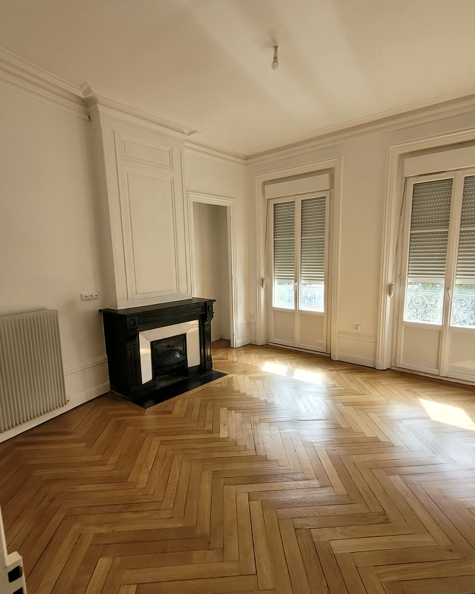
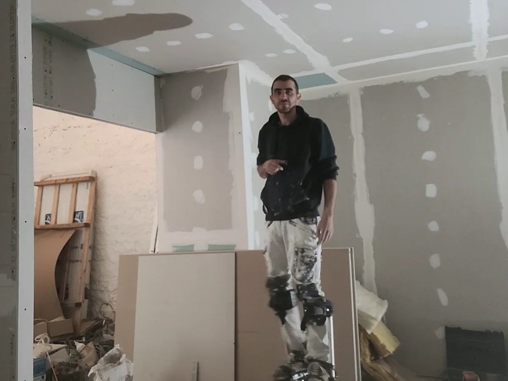
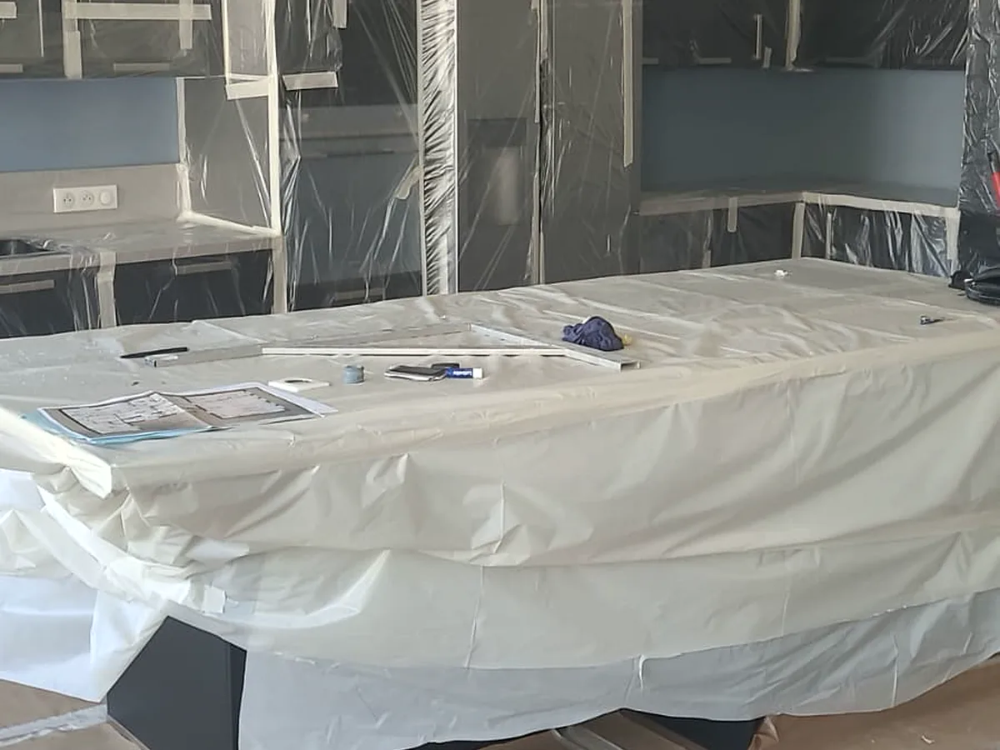

Plâtrerie & placo
Des volumes adaptés à votre intérieur. Cloisons, doublages et faux plafonds.
Plâtrerie, cloisons et plafondsPlâtrerie Peinture Forézienne · Loire
Placo, préparation des supports et peinture intérieure. Un seul artisan, du premier échange aux finitions.
Découvrir les réalisations
Des volumes adaptés à votre intérieur. Cloisons, doublages et faux plafonds.
Plâtrerie, cloisons et plafondsDes supports repris avant la couleur. Bandes à joints, ratissage et ponçage.
Ratissage et enduitsMurs, plafonds et boiseries. Application manuelle ou Airless selon le chantier.
Peinture intérieureLes réalisations parlent
Un appartement ancien, des murs à reprendre et des finitions à retrouver. Découvrez les étapes d’un vrai chantier réalisé à Saint-Étienne.


Photos prises sous des angles différents. Touchez une photo pour l’agrandir.
L’Airless permet une application régulière et rapide sur de grandes surfaces. Le rendu lisse dépend surtout du travail réalisé avant : reprises, ratissage et ponçage soigné des supports.
Une application régulière sur les surfaces adaptées, après préparation et protection de la pièce.
La lumière rasante révèle les défauts pendant le ponçage afin de contrôler la planéité avant l’impression et la peinture.


Placo, bandes, ratissage, ponçage, protection puis application : le matériel est choisi selon le support et la finition attendue.
Comprendre la peinture AirlessChaque chantier commence par une compréhension précise du besoin et une préparation adaptée des supports.
L’avis des clients
5,0 / 5 · 10 avis Google
Note et nombre d’avis consultés le 7 septembre 2026.
« Rémy est très minutieux, réactif et laisse un chantier très propre. »
Arnaud · extrait d’avis Google
« Il a été à l’écoute et a su me conseiller. »
Myriam · extrait d’avis Google
Le choix d’un artisan se fait aussi avec les retours de ceux qui lui ont confié leur intérieur.
Consultez les avis publiés sur Google et les photos partagées par les clients.
Consulter les avis GoogleVous avez fait appel à PPF ? Laisser un avisInterventions à Saint-Étienne et dans plusieurs communes de la Loire, selon la nature et la taille du chantier.
Indiquez la commune, le type de travaux, les surfaces approximatives et, si possible, quelques photos.